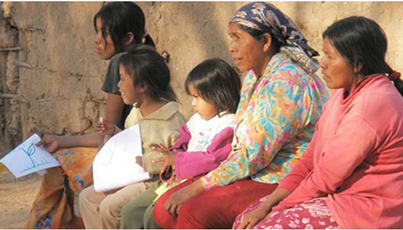

En 2006 las principales agrupaciones de este pueblo se encuentran en el oeste de la provincia de Formosa, el centro y este de la provincia del Chaco y el norte de la provincia de Santa Fe (en Argentina) y en el Chaco Boreal (en Paraguay). En Argentina son unos 69 46217 (59 800 hablantes del idioma) y 700 en Paraguay. En el oeste de la provincia de Formosa se han mixogenizado con los pilagás, siendo denominados toba-pilagás.

Existe una intensa migración interna hacia el Gran Rosario, agrupándose allí especialmente en el barrio Toba; y hacia el noreste de la provincia de Santiago del Estero. Otro asentamiento se encuentra en el partido de La Plata, en la provincia de Buenos Aires.
La Encuesta Complementaria de Pueblos Indígenas (ECPI) 2004-2005, complementaria del Censo Nacional de Población, Hogares y Viviendas 2001 de Argentina, dio como resultado que se reconocieron y/o descienden en primera generación del pueblo toba 69 452 personas en Argentina, de las cuales 47 591 vivían en las provincias de Chaco, Formosa y Santa Fe; 14 466 en la Ciudad de Buenos Aires y 24 partidos del Gran Buenos Aires; y 7395 en el resto del país.
Existen algunos indicios positivos, como el hecho de que se les donaran 1000 hectáreas de tierra y que se les hayan podido construido casas nuevas para muchas personas provistas de agua potable, nuevas escuela bilingües donde los niños aprenden su historia ancestral e instrucción sobre sus tradiciones culinarias. Además se han construido dos nuevos hospitales en la comunidad qom de Formosa. Entre ellos el de Laguna Blanca, a 15 kilómetros de la frontera con el Paraguay, a más de 200 kilómetros de la capital de Formosa, y el Hospital El Espinillo.
El Censo Nacional de Población de 2010 en Argentina reveló la existencia de 126 967 personas que se autoreconocieron como tobas en todo el país, 35 544 de los cuales en el Gran Buenos Aires, 30 766 en la provincia del Chaco, 14 089 en la de Santa Fe, 13 475 en el interior de la provincia de Buenos Aires, 12 246 en la de Formosa, 4117 en la de Córdoba, 3845 en la Ciudad de Buenos Aires, 3427 en la provincia de Salta, 1630 en la de Entre Ríos, 947 en la de Santiago del Estero, 928 en la de Mendoza, 927 en la de Tucumán, 905 en la de Corrientes, 681 en la del Chubut, 419 en la de San Juan, 415 en la de San Luis, 384 en la de Río Negro, 326 en la de Misiones, 273 en la de Catamarca, 221 en la de Tierra del Fuego, 210 en la de La Rioja, 209 en la del Neuquén, 189 en la de La Pampa y 157 en la de Santa Cruz.
Los que se mantienen en sus territorios ancestrales viven generalmente constituyendo comunidades rurales regidas por comisiones vecinales, asociaciones comunitarias o con líderes (o «caciques»)
El Centro de Atención Primaria de la Salud Nam Qom está ubicado sobre la ruta Nacional No 11 de la ciudad de Formosa.
Durante la gobernación de Roy Nikish la situación de los Qom en la provincia de Chaco fue calificada como "un verdadero desastre humanitario" y de "genocidio", con decenas de casos de indígenas que fallecieron a causa de falta de alimentación. El obispo de Resistencia, capital de Chaco llegó a pedir la intervención por parte del gobernador cuando diez indígenas fallececieron a causa de falta de alimentación.23 en 2015 falleció Néstor Femenia.25 La situación económica actual de la mayor parte de los toba es económicamente precaria. Aun en el siglo XXI se ha registrado privación de asistencia médica adecuada, etc., como la muerte por desnutrición y tuberculosis.26 durante 2016, agravada para los niños en estado de abandono ya que durante 2016 se duplicaron los casos con problemas en la alimentación básica de los infantes en las zonas de los Qom y Wichis del Impenetrable chaqueño que terminan en el Hospital de la ciudad de Castelli como última parada y Wichis de Chaco Salteño que llegan al Hospital de Tartagal en extrema situación de abandono.